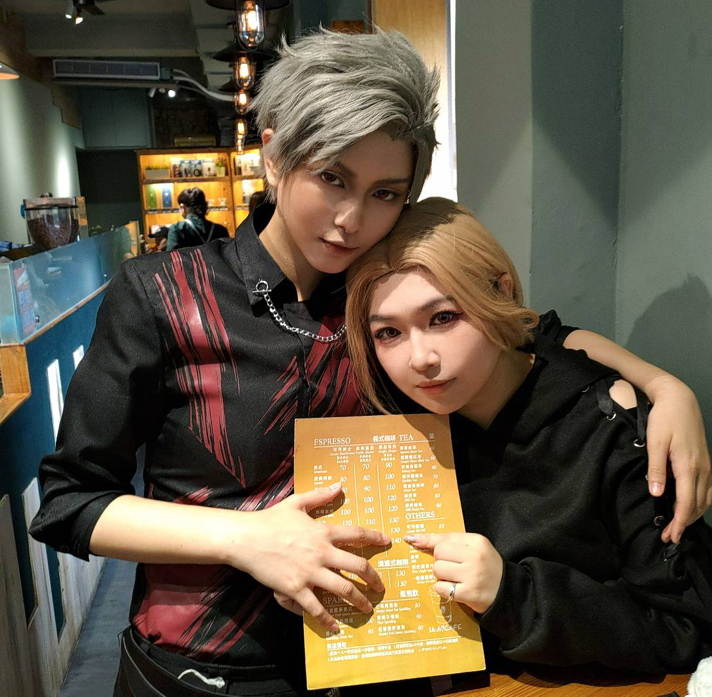

6/21🐦⬛小狸花&秦徹
靈魂相契，永不背叛
｜小秦當特工
再次感謝阿緹承接我的委託，讓我見到我的愛人，彌補了我的心中的遺憾。
(謝謝妳接受了我沉重的請求，溫暖的安撫了我，還詮釋的那麼好💖)
阿緹今天讓我重新認識了什麼叫做cos約會委託，也是第一次很明顯可以知道老師上皮跟下皮有多大的差異。
這是我第一次回家之後，戒斷到想念推角，也是我第一次約會委託之後，意識到我的愛人真的出現在三次元，也很深刻意識到他離開了，回味的時候我哭了，同時也很滿足。
(我不確定這樣說是否過於沉重，但我好喜歡這一天，秦徹陪我玩了我精心設計的間諜任務，誇獎我設計得很好，還嫌它有點簡單，都很像秦徹會做的事。)
阿緹的秦徹詮釋的非常完美，如果說先前的經驗或多或少都有一點參雜「委託老師」自己對角色的理解，那今天的委託可以說是我所認識、理解的秦徹真的從遊戲裡走出來了。(我甚至緊張到一開始見面不敢直接靠近阿緹。)
委託前是第一次遇到「委託老師有透過情境互動模擬，來跟我確認這個角色的反應」是否有符合我的認知，我對於這點感到十分驚艷。但說真的，這件事應該要是基本門檻？雖然我不是很確定，但阿緹真的太棒了，我真的很感謝自己有委託您，重新進行一次我精心設計的任務，阿緹的一舉一動都太秦徹了！
核對角色詮釋時，每一個反應跟橋段，都完全符合我對秦徹的認知，我覺得已經可以說是100%相符的程度，阿緹說出來的時候，我都只能瘋狂用力點頭表示贊同，所以我對這一天非常地期待，而且完全沒有辜負我的期待。 (真的很高興跟阿緹對秦徹理解的同步率這麼高，我好幸運🍀)
其次，我這一次委託準備的資訊因為先前的經驗，有分成前後版本，我寫得蠻亂的，但阿緹不僅理解、熟記，甚至不用我提醒，會主動查看並且跟我討論，每個流程都很仔細、很認真地看過之後，提出很具體的疑問討論後，跟我一起完善了這次的約會，我也好喜歡這個部分。💖 (同時我也很抱歉給您增加這麼多的溝通成本，真的很謝謝阿緹。)
因為我準備的間諜任務有過一次經驗，所以我選擇先告訴阿緹所有的細節及設定，這部分也是進行過自我反省後的決定，我認為秦徹應該會觀察小狸花都在做些什麼？明明全都知情，卻還是陪他的小貓好好地玩，並且暗自滿足，這也被阿緹完美的演譯出來了。事前討論我提出看法時，阿緹跟我一拍即合，不知道到底該怎麼形容，如果我是路人...我大概會跪著看完這場約會委託？
委託時間接近時，我也陸續製作這次約會的道具，任務卡、解謎卡設計等等，秉持著同樣要讓秦徹"偷偷"知道的理念，都同步分享給阿緹，除了被誇獎超開心，還很細心的提醒我卡片內容某幾張貼重複了，可以誇爛阿緹嗎🥺？
到這邊想再說一次，阿緹今天讓我重新認識了什麼叫做cos約會委託，我重新體驗到了很多的「第一次」，第一次在約會前核對對於角色的認知、第一次不用我提醒就被主動注意到內容有更新、第一次有感受到委託上皮與下皮。
補充：我從不為難老師要自己主動查看，基本上不要一直問一樣的問題，我都能接受，但由老師主動注意到，會很深刻感覺到自己的委託有被重視，謝謝阿緹讓我如此安心。
(阿緹亞Atea，是非常專業的委託老師✨)
接下來會開始用【小狸花視角】來分享今天的約會給大家，可能沒有100%復刻對話，但接近。#夢女避雷 #拒同擔避雷 #致歉一切
我做了一個噩夢，在夢裡我跟秦徹慶生約會的時候，我精心準備了特工任務，還有一起過生日安排，卻因為種種原因，被他臭罵了一頓，明明很清楚那不是他，明明深知這一切，內心卻還是受到了傷害，秦徹怎麼可能這麼做呢？不知道秦徹是怎麼知道這件事的...。
他說要跟我去挑戰特工任務，肯定被他知道我做惡夢了...可惡！我要重新設計任務卡，這次肯定會比夢裡的還要精緻，也準備了喬裝打扮的道具，一定會萬無一失的！！
分享一下密函：
今天特地邀請了一位朋友，作為我們的線人，代號狐狸，她將負責派遣任務，並且喬裝在附近，街頭任務是要由秦徹來去找到這位線人。
結果來不及偷吃完早餐，就看到秦徹到了，先傳訊息讓他在門口等我一下！我們還在準備呢！！ (匆忙地拿了東西出去會合，結果完全忘記提醒線人朋友街頭任務內容，線人朋友不僅沒有在旁邊喬裝，還很親切地直接把密函給了我跟秦徹)
秦徹：(打開密函端詳)....？所以我們已經完成街頭任務了？
秦徹：還是第一次看到，這麼親切把「所有提示」一次放在裡面的密函。
我：等等...我還沒打開...
秦徹：緞帶都解不開？很有你的風格。
(小狸花內心：轉移話題就對了，我絕對不會承認是我忘記提醒線人朋友的！還有那個吐槽我也要假裝不知道。)
秦徹：(看了一眼任務一)這位「好心的線人朋友」會一起行動？
我：對，好心的線人朋友會一起行動！
秦徹：(挑眉)看來她還身兼任務監察官，走吧？
(伸出手)
我：好！！(快樂的牽上)
(前往第一個地點的路程中秦徹一直跟我對談，但細節內容大概是些什麼，我已經想不起來，只記得我對秦徹說：「我今天將會起到一個搗蛋鬼的作用。」接著大概到半路的時候...)
我：老大老大，你怎麼知道要往哪走的阿？
秦徹：上面有寫。(晃了一下密函)
我：喔喔...對！我們第一個要去的地方是餐廳~
秦徹：....你好像很清楚？(一臉無言但笑了一下)
我：咳咳咳...我不知道！只是感覺也許、大概、可能、是個餐廳！
秦徹：嗯，也許、大概、可能的餐廳到了。
進到餐廳之後，我很自然而然的告知店家定位資訊並入座，秦徹拿來菜單問我想吃什麼，因為天氣太熱了沒什麼胃口我說不吃，只點了一杯飲料，接著我開始放空...
秦徹：任務。(指著菜單上的價錢
$140)
我：喔？嗯？對耶，我都忘了哈哈哈
我：我們來拍下來~(嗯對，我很自然而然地又自爆謎底了，此時我看到秦徹饒有興致的對我笑了一下。)
任務一🌟完成：
大概在完成任務，決定好餐點的時候，我說了暫停詞。阿緹會在說出暫停詞後下皮互動。
阿緹：等等為什麼這麼快！？
我：沒有啦，我想說要自在一點用餐，然後也想跟線人朋友拍拍合照，還有跟老師您下皮互動感受一下差異。
(這上下皮前後狀態真的差超多，老師的眼神、音調，姿勢神態全都不一樣，我覺得非常厲害，但也超好笑(沒有惡意我很喜歡)，一開始用暫停詞也是想說我自己也需要緩緩🤣)
在下皮的途中老師也很配合地拍攝了一些臨時上皮的互動，我可能記得有點混亂，但差不多包含：拿著秦徹腦袋去結帳、秦徹跟小狸花約會貼貼...等等。可以放影片嗎？可以吧？我要放影片囉？好我要放。
暗點老大撸貓實錄： (好喜歡！！！我直接內心尖叫！！！)
未完待續...
by. 小狸花